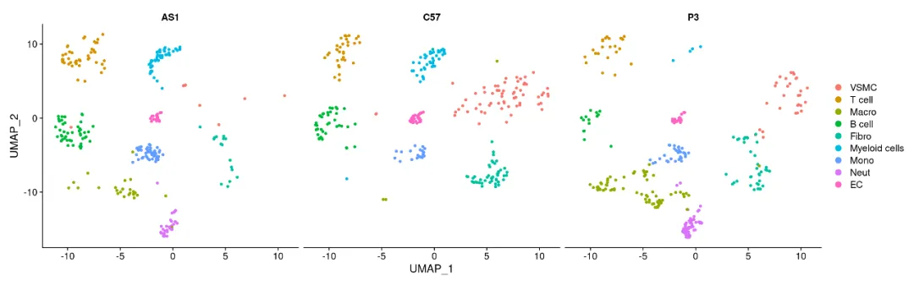
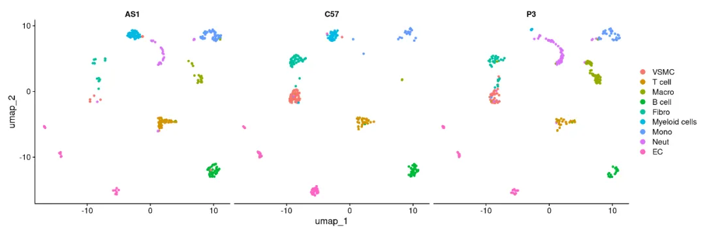
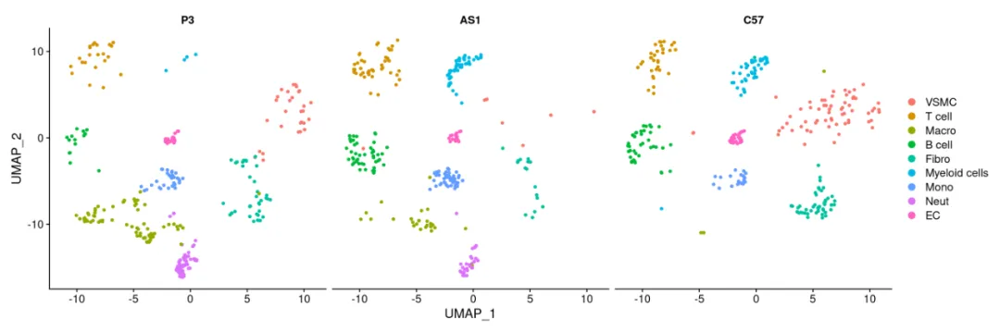
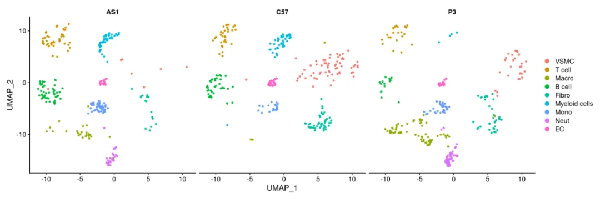
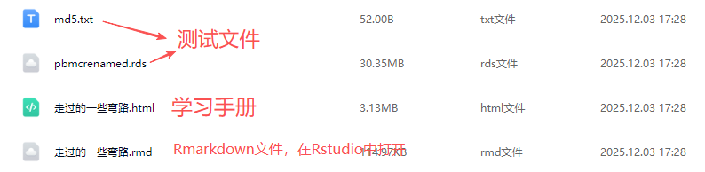

突然想起学单细胞走过的弯路
原文：https://mp.weixin.qq.com/s?__biz=MzAwMzIzOTk5OQ==&mid=2247533491&idx=1&sn=1dd2fe09639fcb52ac5be6d2af2b77b6&chksm=9b3c3ae3ac4bb3f5d5bb99c18d1fc673f372282a3cb8debcdc61562df06c0b5926ffe132af50#rd 合集：单细胞教程全收录
一、写在前面
Biomamba生信基地长期维护两千人生信交流群，每天看大家在群里提问、解决问题，其实大家遇到的很多问题，其实我们都教过。另一方面我也颇有感慨，当年我入门的时候，也干过很多蠢事，学习和分析过程中走过很多弯路。接下来将从两个案例来展示我走过的弯路，一是在整合多样本单细胞数据，二是Linux命令使用的md5值校验。
当然，你常常遇到的问题，其实我们都遇到过、教过，想少走点弯路的同学可以考虑加入下列课程：
82h视频教程《Python版scRNA-seq分析全流程》
——Biomamba
二、案例
案例1
在整合一个多样本单细胞数据时，需要注意将各组别调整至目标顺序，这是一个关键步骤。
# 加载R包：
library(Seurat）
## Loading required package: SeuratObject
## Loading required package: sp
## 'SeuratObject' was built with package 'Matrix' 1.7.1 but the current
## version is 1.7.2; it is recomended that you reinstall 'SeuratObject' as
## the ABI for 'Matrix' may have changed
##
## Attaching package: 'SeuratObject'
## The following objects are masked from 'package:base':
##
## intersect, t
scRNA <- readRDS('pnmcrenamed.rds')
DimPlot(scRNA,split.by = 'group')

现在的顺序是AS1、C57、P3，如果需要把它变成P3、AS1、C57的顺序，当时的做法是(非常愚蠢，大家不要效仿)：
# 拆出几个分组：
C57 <- scRNA[,scRNA$group =='C57']
AS1 <- scRNA[,scRNA$group =='AS1']
P3 <- scRNA[,scRNA$group =='P3']
# 天真的以为我调整好整合的顺序就可以修改分组：
ifnb.list <-list(
P3=P3,
AS1=AS1,
C57=C57
)
# 于是我又开始了漫长的CCA整合过程：
ifnb.list <-lapply(X = ifnb.list, FUN =function(x) {
x <-NormalizeData(x) # 归一化（若已归一化可跳过）
x <-FindVariableFeatures(x, selection.method ="vst", nfeatures =2000) # 筛选2000个高变基因
return(x)
})
testAB.anchors <-FindIntegrationAnchors(object.list = ifnb.list, dims =1:20)
## Computing 2000 integration features
## Scaling features for provided objects
## Finding all pairwise anchors
## Running CCA
## Merging objects
## Finding neighborhoods
## Filtering anchors
## Retained 716 anchors
ifnb.integrated <-IntegrateData(anchorset = testAB.anchors, dims =1:20)
## Merging dataset 1 into 3
## Extracting anchors for merged samples
## Finding integration vectors
## Finding integration vector weights
## Integrating data
## Warning: Layer counts isn't present in the assay object; returning NULL
## Merging dataset 2 into 3 1
## Extracting anchors for merged samples
## Finding integration vectors
## Finding integration vector weights
## Integrating data
## Warning: Layer counts isn't present in the assay object; returning NULL
DefaultAssay(ifnb.integrated) <-'integrated'
ifnb.integrated <-ScaleData(object = ifnb.integrated)
## Centering and scaling data matrix
ifnb.integrated <-RunPCA(ifnb.integrated, assay ="integrated", verbose =FALSE)
ifnb.integrated <-RunUMAP(ifnb.integrated, dims =1:15, verbose =FALSE)
## Warning: The default method for RunUMAP has changed from calling Python UMAP via reticulate to the R-native UWOT using the cosine metric
## To use Python UMAP via reticulate, set umap.method to 'umap-learn' and metric to 'correlation'
## This message will be shown once per session
DimPlot(ifnb.integrated,split.by ='group')

结果大失所望，分组顺序并没有被改变。简直让人崩溃，当时的数据有5w左右的单细胞，加上破烂设备，运行一次去批次操作需要花费2-3天的时间。然而真相是，结合R语言常见数据类型中提到的因子这一概念，并设置正确的level，根本无需重新整合数据：scRNA$group <-factor(scRNA$group,levels =c('P3','AS1','C57'))
DimPlot(scRNA, split.by ='group')

# 想怎么调整就怎么调整：
scRNA$group <-factor(scRNA$group,levels =c('AS1','C57','P3'))
DimPlot(scRNA, split.by ='group')

案例2
在学Linux的时候也干过很愚蠢的事，例如，校验pbmcrenamed.rds文件存储在md5.txt中的md5值，以检查文件传输是否丢包。
# 我又天真的求出了该文件的md5值
md5sum ./pbmcrenamed.rds
cat ./md5.txt
## bbe2a767a9dd32e6fb61229c8bd5c96b ./pbmcrenamed.rds
## bbe2a767a9dd32e6fb61229c8bd5c96b ./pbmcrenamed.rds
是的你没看错，当时是人肉比对这两串字符是否一样。但实际正确的做法是：
md5sum -c ./md5.txt
## ./pbmcrenamed.rds: OK
md5sum函数的-c选项直接就能够自动校验md5值。
好了，Biomamba真是大聪明，希望大家引以为戒，不积跬步无以至千里，利用好AI和我们公众号的教程，少走点单细胞/生信的弯路。
如果自学生信有障碍，不妨看一看：
三、演示环境
一切不给测试文件和分析环境版本的教程都是耍流氓，本推送的代码和测试文件可以在以下链接中下载：

通过网盘分享的文件: https://pan.baidu.com/s/1Ki8KcIq0Ro-FndW1FCrf_w
提取码: tpdn
R语言演示环境(开箱即用的单细胞分析镜像)：
sessionInfo()
## R version 4.4.2 (2024-10-31)
## Platform: x86_64-pc-linux-gnu
## Running under: Ubuntu 20.04.4 LTS
##
## Matrix products: default
## BLAS: /usr/lib/x86_64-linux-gnu/openblas-pthread/libblas.so.3
## LAPACK: /usr/lib/x86_64-linux-gnu/openblas-pthread/liblapack.so.3; LAPACK version 3.9.0
##
## locale:
## [1] LC_CTYPE=en_US.UTF-8 LC_NUMERIC=C
## [3] LC_TIME=en_US.UTF-8 LC_COLLATE=en_US.UTF-8
## [5] LC_MONETARY=en_US.UTF-8 LC_MESSAGES=en_US.UTF-8
## [7] LC_PAPER=en_US.UTF-8 LC_NAME=C
## [9] LC_ADDRESS=C LC_TELEPHONE=C
## [11] LC_MEASUREMENT=en_US.UTF-8 LC_IDENTIFICATION=C
##
## time zone: Etc/UTC
## tzcode source: system (glibc)
##
## attached base packages:
## [1] stats graphics grDevices utils datasets methods base
##
## other attached packages:
## [1] Seurat_5.2.1 SeuratObject_5.0.2 sp_2.2-0
##
## loaded via a namespace (and not attached):
## [1] deldir_2.0-4 pbapply_1.7-2 gridExtra_2.3
## [4] airports_0.1.0 rlang_1.1.5 magrittr_2.0.3
## [7] RcppAnnoy_0.0.22 spatstat.geom_3.4-1 matrixStats_1.5.0
## [10] ggridges_0.5.6 compiler_4.4.2 png_0.1-8 ## [13] vctrs_0.6.5 reshape2_1.4.4 stringr_1.5.1
## [16] pkgconfig_2.0.3 fastmap_1.2.0 labeling_0.4.3
## [19] promises_1.3.2 rmarkdown_2.29 tzdb_0.4.0
## [22] openintro_2.5.0 purrr_1.0.2 xfun_0.50
## [25] cachem_1.1.0 jsonlite_1.8.9 goftest_1.2-3
## [28] later_1.4.1 spatstat.utils_3.1-4 irlba_2.3.5.1
## [31] parallel_4.4.2 cluster_2.1.8 R6_2.5.1 ## [34] ica_1.0-3 spatstat.data_3.1-6 stringi_1.8.4 ## [37] bslib_0.9.0 RColorBrewer_1.1-3 reticulate_1.43.0.9001
## [40] spatstat.univar_3.1-3 parallelly_1.42.0 lmtest_0.9-40
## [43] jquerylib_0.1.4 scattermore_1.2 Rcpp_1.0.14 ## [46] knitr_1.49 tensor_1.5 future.apply_1.11.3
## [49] zoo_1.8-12 cherryblossom_0.1.0 readr_2.1.5
## [52] sctransform_0.4.1 httpuv_1.6.15 Matrix_1.7-2
## [55] splines_4.4.2 igraph_2.1.4 tidyselect_1.2.1
## [58] abind_1.4-8 rstudioapi_0.17.1 yaml_2.3.10
## [61] spatstat.random_3.4-1 spatstat.explore_3.4-3 codetools_0.2-20
## [64] miniUI_0.1.1.1 listenv_0.9.1 lattice_0.22-6
## [67] tibble_3.2.1 plyr_1.8.9 withr_3.0.2
## [70] shiny_1.10.0 ROCR_1.0-11 evaluate_1.0.3
## [73] Rtsne_0.17 future_1.34.0 fastDummies_1.7.5
## [76] survival_3.8-3 polyclip_1.10-7 fitdistrplus_1.2-2
## [79] pillar_1.10.1 KernSmooth_2.23-26 plotly_4.10.4
## [82] generics_0.1.3 RcppHNSW_0.6.0 hms_1.1.3
## [85] ggplot2_3.5.1 munsell_0.5.1 scales_1.3.0
## [88] globals_0.16.3 xtable_1.8-4 glue_1.8.0
## [91] lazyeval_0.2.2 tools_4.4.2 data.table_1.16.4
## [94] RSpectra_0.16-2 RANN_2.6.2 dotCall64_1.2
## [97] cowplot_1.1.3 grid_4.4.2 tidyr_1.3.1
## [100] colorspace_2.1-1 nlme_3.1-168 patchwork_1.3.0
## [103] usdata_0.3.1 cli_3.6.3 spatstat.sparse_3.1-0
## [106] spam_2.11-1 viridisLite_0.4.2 dplyr_1.1.4
## [109] uwot_0.2.2 gtable_0.3.6 sass_0.4.9
## [112] digest_0.6.37 progressr_0.15.1 ggrepel_0.9.6
## [115] htmlwidgets_1.6.4 farver_2.1.2 htmltools_0.5.8.1
## [118] lifecycle_1.0.4 httr_1.4.7 mime_0.12
## [121] MASS_7.3-64sessionInfo()

如何联系我们

 留一个领取资料、开箱即用的单细胞分析镜像的微信号[Biomamba_zhushou]，方便各位随时交流。同时我们也构建了交流群矩阵，欢迎大家入群讨论。
大家可以阅读完这几篇之后添加给生信入门初学者的小贴士
没有检索，就没有发言权
留一个领取资料、开箱即用的单细胞分析镜像的微信号[Biomamba_zhushou]，方便各位随时交流。同时我们也构建了交流群矩阵，欢迎大家入群讨论。
大家可以阅读完这几篇之后添加给生信入门初学者的小贴士
没有检索，就没有发言权
已有生信基地联系方式的同学无需重复添加

 您点的每个赞和在看，我都认真当成了喜欢
您点的每个赞和在看，我都认真当成了喜欢